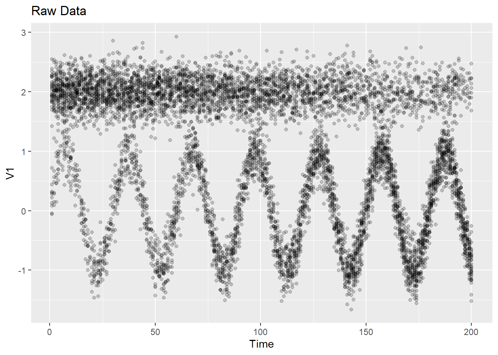

2 The model
Our interest is in modeling a sequence of scatterplots measured over time. That is, we observe
\(Y_{it}\in\mathbb R^d\) for \(i=1,\ldots,n_t\) and \(t=1,\ldots,T\).
In continuous-time flow cytometry data, we notice that this data has two properties:
Each scatterplot looks approximately like a mixture of Gaussians.
The general clustering structure seen in each scatterplot is slowly varying over time.
To model data like this, we wish to fit a smoothly-varying mixture of Gaussians model:
\[ Y_{it}|\{Z_{it}=k\}\sim N_d(\mu_{kt},\Sigma_{kt})\qquad\mathbb P(Z_{ik}=k)=\pi_{kt} \] where \((\mu_{kt},\Sigma_{kt},\pi_{kt})\) are slowly varying parameters.
It will be useful to have data generated from this model for testing purposes, so we begin by defining a function for simulating from this model.
2.1 Generating data from model
#' Generate data from smoothly-varying mixture of Gaussians model
#'
#' The smoothly-varying mixture of Gaussians model is defined as follows:
#'
#' At time t there are n_t points generated as follows:
#'
#' Y_{it}|\{Z_{it}=k\} ~ N_d(mu_{kt},Sigma_{kt})
#' where
#' P(Z_{ik}=k)=pi_{kt}
#' and the parameters (mu_t, Sigma_t, pi_t) are all slowly varying in time.
#'
#' This function generates Y and Z.
#'
#' @param mu_function a function that maps a vector of times to a T-by-K-by-d
#' array of means
#' @param Sigma_function a function that maps a vector of times to a
#' T-K-by-d-by-d array of covariance matrices
#' @param pi_function a function that maps a vector of times to a T-by-K vector
#' of probabilities
#' @param num_points a T vector of integers giving the number of points n_t to
#' generate at each time point t.
#' @export
generate_smooth_gauss_mix <- function(mu_function,
Sigma_function,
pi_function,
num_points) {
times <- seq_along(num_points)
mu <- mu_function(times)
Sigma <- Sigma_function(times)
pi <- pi_function(times)
K <- ncol(pi) # number of components
d <- dim(mu)[3]
dimnames(mu) <- list(NULL, paste0("cluster", 1:K), NULL)
z <- list() # z[[t]][i] = class of point i at time t
y <- list() # y[[t]][i,] = d-vector of point i at time t
for (t in times) {
z[[t]] <- apply(stats::rmultinom(num_points[t], 1, pi[t, ]) == 1, 2, which)
y[[t]] <- matrix(NA, num_points[t], d)
for (k in 1:K) {
ii <- z[[t]] == k # index of points in component k at time t
if (sum(ii) == 0) next
if (d == 1)
y[[t]][ii, ] <- stats::rnorm(n = sum(ii),
mean = mu[t, k, ],
sd = Sigma[t, k, , ])
else
y[[t]][ii, ] <- mvtnorm::rmvnorm(n = sum(ii),
mean = mu[t, k, ],
sigma = Sigma[t, k, , ])
}
}
list(y = y, z = z, mu = mu, Sigma = Sigma, pi = pi)
}We have used two packages in this function, so let’s add these into our package.
usethis::use_package("stats")
usethis::use_package("mvtnorm")## ✔ Adding 'stats' to Imports field in DESCRIPTION
## • Refer to functions with `stats::fun()`## ✔ Adding 'mvtnorm' to Imports field in DESCRIPTION
## • Refer to functions with `mvtnorm::fun()`Let’s generate an example in the \(d=1\) case:
set.seed(123)
d <- 1; K <- 2; ntimes <- 200
ex1 <- list(
mu_function = function(times) {
mu <- array(NA, c(ntimes, K, d))
mu[, , 1] <- cbind(sin(2 * pi * times / 30), 2)
mu
},
Sigma_function = function(times) {
Sigma <- array(NA, c(ntimes, K, 1, 1))
Sigma[, , 1, 1] <- 0.25
Sigma
},
pi_function = function(times) {
pi1 <- seq(0.2, 0.8, length=length(times))
cbind(pi1, 1 - pi1)
},
num_points = rep(40, ntimes)
)
ex1$dat <- generate_smooth_gauss_mix(ex1$mu_function,
ex1$Sigma_function,
ex1$pi_function,
ex1$num_points)2.2 Visualizing data in one-dimensional case
Let’s make a function for visualizing the data in the one-dimensional case.
library(magrittr) # we'll be using the pipe in this documentThe function will take as input the following argument:
###"y-param"###
#' @param y length T list with `y[[t]]` being a n_t-by-d matrixWe define this bit of documentation in its own code chunk so that it can be easily reused since multiple functions in the package take it as input.
#' Plot raw data when `d = 1`
#'
<<y-param>>
#'
#' @export
plot_data <- function(y) {
stopifnot(ncol(y[[1]]) == 1)
purrr::map_dfr(y, ~ tibble::tibble(y = .x), .id = "time") %>%
dplyr::mutate(time = as.numeric(.data$time)) %>%
ggplot2::ggplot(ggplot2::aes(x = .data$time, y = .data$y)) +
ggplot2::geom_point(alpha = 0.2)
}We’ve used some functions from other packages, so let’s include those in our package:
usethis::use_pipe()
usethis::use_package("purrr")
usethis::use_package("tibble")
usethis::use_package("dplyr")
usethis::use_package("ggplot2")
usethis::use_import_from("rlang", ".data")## ✔ Adding 'magrittr' to Imports field in DESCRIPTION
## ✔ Writing 'R/utils-pipe.R'
## • Run `devtools::document()` to update 'NAMESPACE'## ✔ Adding 'purrr' to Imports field in DESCRIPTION
## • Refer to functions with `purrr::fun()`## ✔ Adding 'tibble' to Imports field in DESCRIPTION
## • Refer to functions with `tibble::fun()`## ✔ Adding 'dplyr' to Imports field in DESCRIPTION
## • Refer to functions with `dplyr::fun()`## ✔ Adding 'ggplot2' to Imports field in DESCRIPTION
## • Refer to functions with `ggplot2::fun()`## ✔ Adding 'rlang' to Imports field in DESCRIPTION
## ✔ Adding '@importFrom rlang .data' to 'R/flowkernel-package.R'
## ✔ Writing 'NAMESPACE'Let’s look at our example data using this plotting function:
plot_data(ex1$dat$y)
2.3 Visualizing data and model in one-dimensional case
We’ll also want a function for plotting the data with points colored by true (or estimated) cluster. And it will be convenient to also be able to superimpose the true (or estimated) means. The next function does this:
#' Plot data colored by cluster assignment with cluster means when `d=1`
#'
<<y-param>>
#' @param z a length T list with `z[[t]]` being a n_t vector of cluster assignments
#' @param mu a T-by-K-by-d array of means
plot_data_and_model <- function(y, z, mu) {
dat_df <- purrr::map2_dfr(z, y, ~ tibble::tibble(z = as.factor(.x), y = .y),
.id = "time") %>%
dplyr::mutate(time = as.numeric(.data$time))
means_df <- tibble::as_tibble(mu[, , 1]) %>%
dplyr::mutate(time = dplyr::row_number()) %>%
tidyr::pivot_longer(-.data$time, names_to = "cluster", values_to = "mean")
ggplot2::ggplot() +
ggplot2::geom_point(
data = dat_df,
ggplot2::aes(x = .data$time, y = .data$y, color = .data$z), alpha = 0.2
) +
ggplot2::geom_line(
data = means_df,
ggplot2::aes(x = .data$time, y = .data$mean, group = .data$cluster)
)
}We used a function from tidyr, so let’s include this package:
usethis::use_package("tidyr")## ✔ Adding 'tidyr' to Imports field in DESCRIPTION
## • Refer to functions with `tidyr::fun()`For now we can use this to visualize the true model, although later this will be useful for visualizing the estimated model.
plot_data_and_model(ex1$dat$y, ex1$dat$z, ex1$dat$mu)